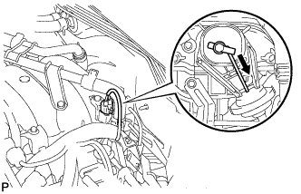
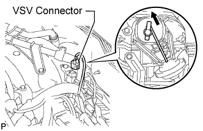
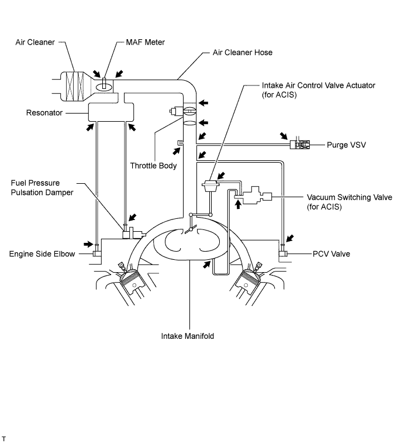

INTAKE SYSTEM > ON-VEHICLE INSPECTION |
| 1. INSPECT INTAKE AIR CONTROL VALVE OPERATION |
 |
Start the engine.
While the engine is idling, check that the actuator rod moves as shown in the illustration.
 |
Disconnect the VSV connector, and check that the actuator rod returns.
If the result is not as specified, inspect the intake air control valve, VSV and ECM.
| 2. CHECK AIR INDUCTION SYSTEM |

Check that the hoses are installed correctly.
Check for cracks, etc. in the hoses.